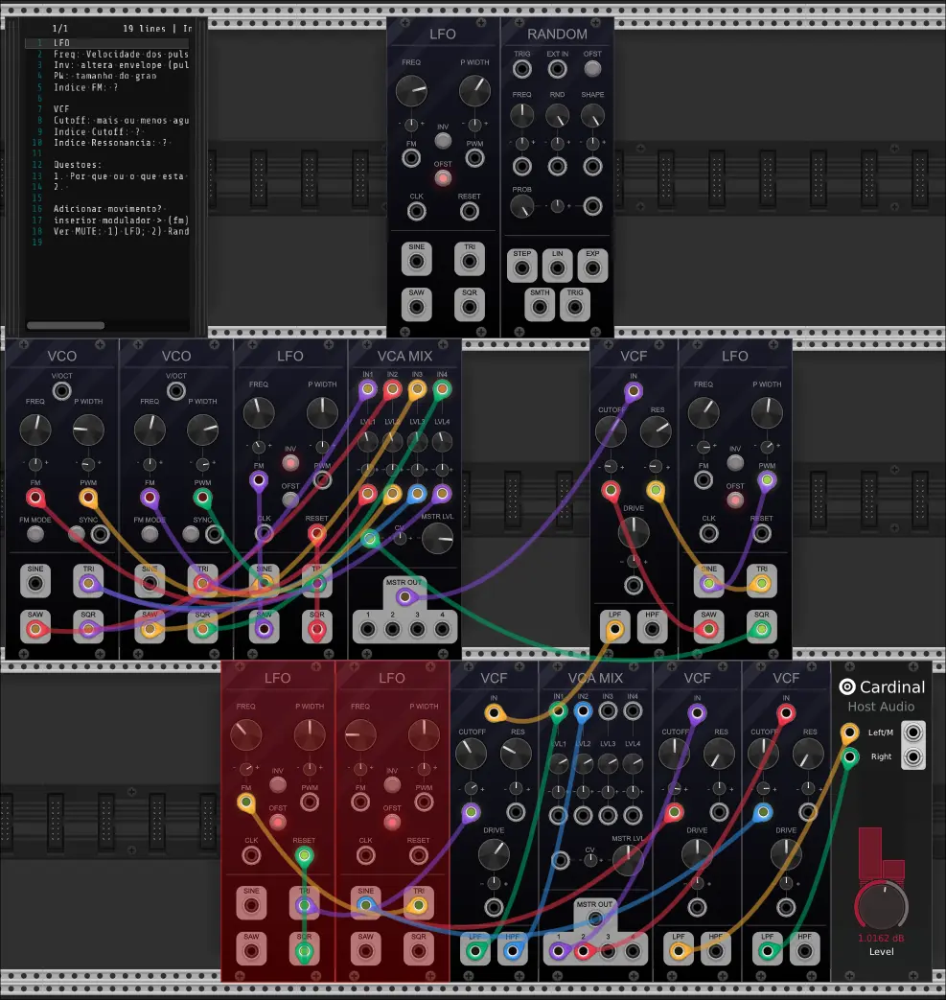
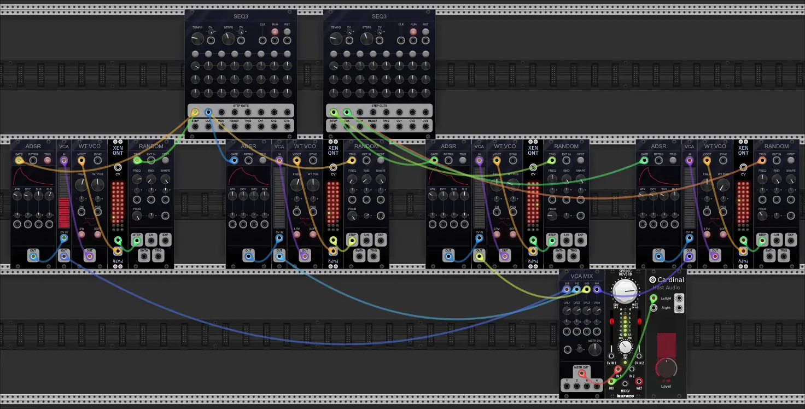

O conjunto de patches proposto constitui um recurso didático destinado a facilitar a compreensão de conceitos musicais por parte de compositores(as) iniciantes no uso de sintetizadores modulares ou programação visual. A intenção é oferecer ideias composicionais mais ou menos prontas, destacando as capacidades dessas ferramentas, as quais podem ser obscurecidas por configurações iniciais. Por isso, o conjunto de patches apresentados trabalhamos com o VCV Rack através do Cardinal (uma versão online) assim como o PureData e uma versão online.
VCV Rack é uma emulação de sintetizadores modulares, que funciona como na vida real, onde patches são feitos adicionando módulos e conectando-os com patch cords. É gratuito e de código aberto, permitindo que as pessoas desenvolvam novos módulos.
Descrição...

Descrição...
Descrição...
